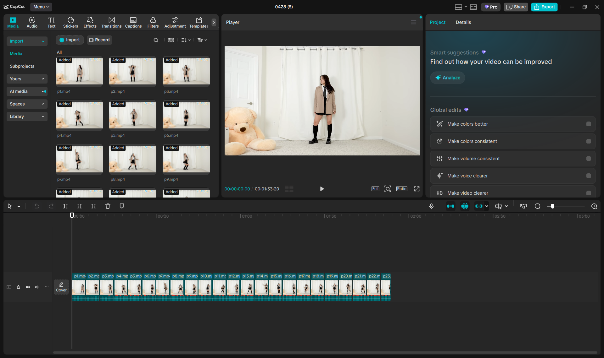
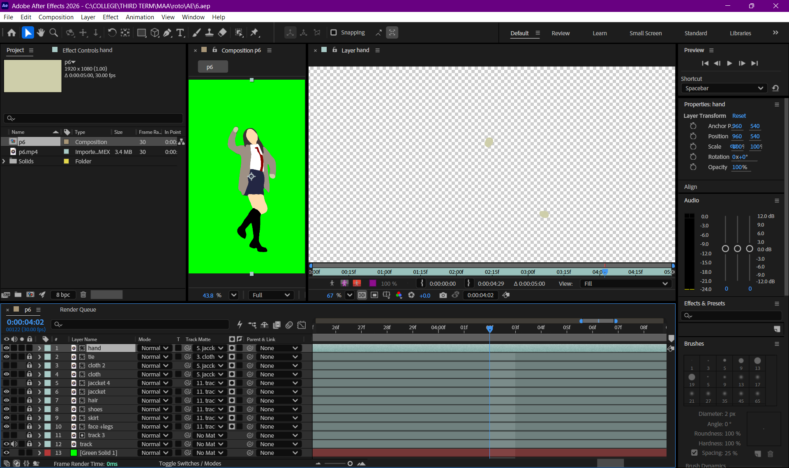
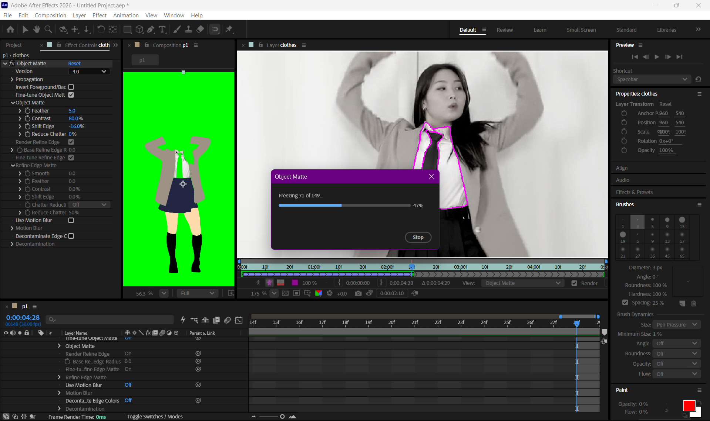
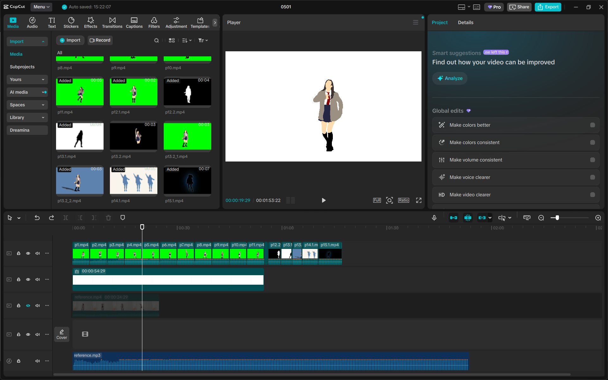
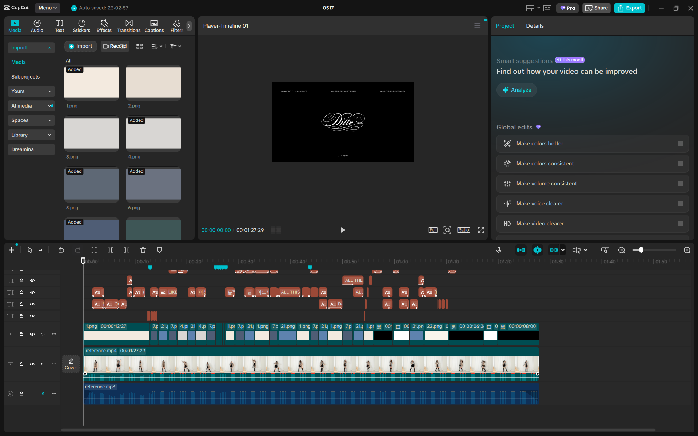
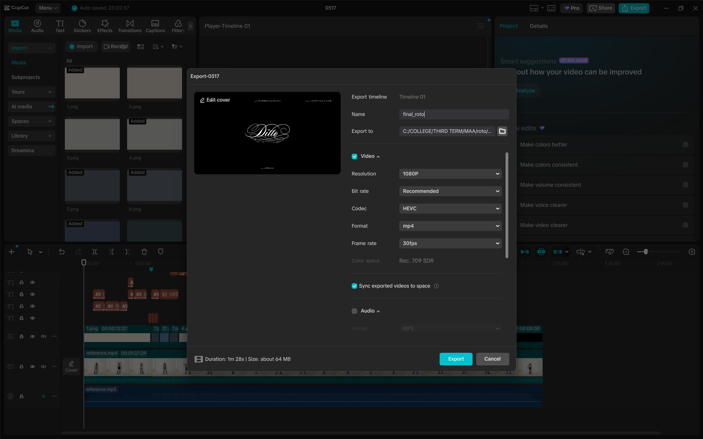

Project 01 — Animation
Rotoscoping
A frame-by-frame animation project produced by tracing over reference video footage, exploring motion, color, and the boundaries between live action and illustration.
Section 01
What is Rotoscoping?
Rotoscoping is an animation technique in which animators trace over footage, frame by frame, to produce realistic action. Originally patented by Max Fleischer in 1917, the method has been widely used in film, television, and visual effects to achieve smooth, lifelike movement.
In this project, the technique is used as a creative exercise to learn the fundamentals of animation timing, color layering, and digital illustration within the context of the Multimedia and Authoring curriculum.
Project Info
- Subject: Multimedia and Authoring — TUP Taguig
- Reference video (original): https://youtu.be/hhu5YMzAZFQ?si=5u8FQ_0J2vuqGzHN
- Embedding note: The original YouTube source is linked only and not embedded due to copyright restrictions.
- Technique: Separate layers — outline, skin, details, background
Tools Used
Adobe After Effects
Rotoscoping tool (1080p landscape)
CapCut
Editing tool (cutting clips, assembly, color grading, audio sync)
Final Output Version
Final Reference
Shared controls keep the final reference and output in sync so you can compare them side by side.
I do not own the music, live-action source footage, or any copyrighted materials used in this video. All rights belong to their respective owners. I have only edited and synchronized the clips with the music for educational and informational purposes only.
This video is created strictly for educational use, commentary, and transformative content, with the intention of providing analysis, learning value, and creative editing practice.
Copyright Disclaimer Under Section 107 of the Copyright Act 1976:
Allowance is made for “fair use” for purposes such as criticism, comment, news reporting, teaching, scholarship, and research. Fair use is a use permitted by copyright statute that might otherwise be infringing.
This content is non-profit, educational, and transformative in nature, which tips the balance in favor of fair use.
How I Did It
Process & Method
Step 01
Find & Download Reference Video
Search for a suitable reference video with clear, readable motion. Choose one that has consistent lighting and a subject that moves at a manageable pace for frame-by-frame tracing. Download it in the highest quality available.

Step 02
Cut Video into Short Clips in CapCut
Import the downloaded video into CapCut. Cut the footage into shorter, more manageable clips to make the heavy rotoscoping process in After Effects easier and less resource-intensive. Export these shorter clips.

Step 03
Set Up in After Effects
Import the shortened clips into Adobe After Effects. Create a new composition matching the 1080p source footage to prepare your workspace for the rotoscoping process.

Step 04
Rotoscope the Footage
Use the Rotobrush tool or manually trace the subject frame by frame using masks and shapes. Separate the subject from the background to isolate the movement and create the animation effect.

Step 05
Assemble All Clips
Export all rotoscoped clips from After Effects with transparent backgrounds. Import them into your editing software and sequence them together in the correct order to form the complete animation.

Step 06
Add Text & Titles
Layer text, titles, and captions to enhance the visual narrative. Add scene transitions, credits, and any necessary overlay text to provide context and polish the final presentation.

Step 07
Export & Review Final Output
Export the final assembled video in 1080p. Review the output against the reference to check for consistency in motion, effects, and timing before final submission.
Documentation
Progress by Week
Weekly video progress will be embedded here as they become available throughout the semester.